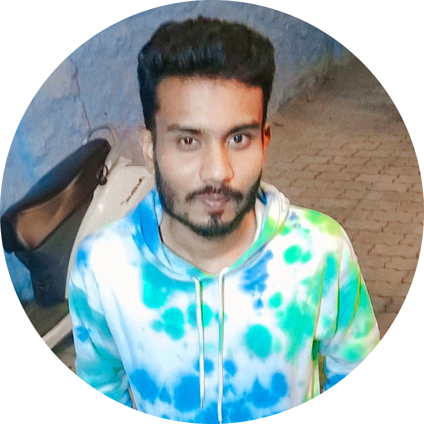

|  | Mohammed RiswanI am a beginner in web developer |
| 🎁August 04, 1997 | rris7480@gmail.com |
| 📍Shengottai, Tamil Nadu | +918056xxxxx |
I am seeking a job to obtain a challenging position that fully utilizes my skills and provides me with suitable opportunities to grow my technical and communication skills which would help me as fresher to grow while working towards the organizational goals.
Master Of Computer Application
|
Graduated December 2021 |
|
Bachelors Of Computer Application |
Graduated, April 2018 Marks 60.3%(Upload 6th semester) Manomaniam Sundrana University |
|
HSC(12th, Standard) |
Graduated March 2015 |
|
SSLC(10TH Standard)
SMSS Govt Boys Hr,Sec.School, |
Graduated March 2013 |
Title: TOUR AND TRAVEL MANAGEMENT SYSTEM
Description: A travel management system this project developed using Php and MySQL. The Purpose of this project is to provide the complete information about the vehicles available for a tour.
Title:COLLEGE BUS MANAGEMENT SYSTEM
Description:The college bus management system is a desktop system aimed at Bus details, College administration to maintain bus facilities did this project I used front end in visual studio (Asp, net) and back end is MYSQL Server.
I Mohammed Riswan hereby declare that the information contained herein is true and correct to the best of my knowledge and belief.